Pipeline de notícias setoriais
Sistema de inteligência de notícias em Airflow que coleta mais de cem portais, classifica cada notícia por setor com um modelo de linguagem local e transforma fusões e aquisições, rodadas de venture capital e outros movimentos societários numa base estruturada de transações. Os produtos finais são uma newsletter semanal por setor e um relatório periódico de transações em PDF.
- 5DAGs no Airflow
- 100+portais coletados por cinco estratégias de raspagem
- 3critérios do juiz, avaliados um por chamada
- 2produtos finais, a newsletter por setor e o relatório de transações
Coleta e classificação
COLETA

CLASSIFICAÇÃO E ENTREGA

Cinco estratégias de raspagem cobrem o que cada fonte oferece, entre feeds RSS, sitemaps XML de órgãos públicos, navegação por sublinks, portais multissetoriais e um navegador real para os sites que só renderizam com JavaScript. As tarefas de navegador rodam num pool sobre Selenium Grid, e cada fonte é uma task isolada, de modo que um portal fora do ar falha sozinho e gera alerta sem interromper os demais. A limpeza padroniza datas em formatos irregulares, remove ruído de título e rodapé e deduplica por título.
A classificação envia os títulos em lotes a um Qwen rodando localmente no Ollama, com um prompt que descreve cada setor e define regras de desempate. Cada notícia pode receber mais de um setor, o que não interessa vai para uma classe de descarte e os lotes que voltam vazios são repescados em lotes menores. O mesmo modelo atribui uma nota de relevância de 0 a 100 e marca a abrangência como regional, nacional ou global, e templates de prompt do LangChain redigem a síntese de cada setor para a newsletter.
Extração de transações
EXTRAÇÃO

JULGAMENTO E BASE

A triagem primária combina um score de padrões em regex sobre o título com um classificador zero-shot mDeBERTa-v3 multilíngue rodando em GPU, com limiares calibrados. Só o que passa por essa triagem segue para a extração estruturada com gpt-oss-120b via Groq, que devolve as partes, o valor, a moeda, o setor, o status e os países envolvidos em JSON validado contra um schema fechado.
Um juiz em cascata avalia cada transação com uma chamada por critério, verificando se o que muda de dono é uma empresa e não um ativo isolado, se a transação pertence ao período e se a notícia traz fato novo. As transações reprovadas ficam registradas numa tabela de auditoria.
A deduplicação semântica agrupa as candidatas pelo nome das partes e compara par a par se tratam do mesmo negócio, reconhecendo grafias diferentes, papéis invertidos e mudanças de status. Quando é o mesmo negócio, a notícia é mesclada na transação existente e a mudança fica registrada numa tabela de eventos. O processamento respeita o teto diário de tokens e retoma de onde parou na rodada seguinte.
Monitoramento e entrega
Cada descarte deixa rastro, de modo que a fonte fora do ar vira alerta por e-mail, o lote vazio vira repescagem e a transação reprovada vai para a auditoria. Um monitor compara a taxa de rejeição do juiz com o histórico e avisa quando ela se afasta do padrão.
A newsletter por setor e o relatório de transações saem da mesma base, e o envio guarda uma marca d’água para que nenhum relatório se perca quando um e-mail falha. Um serviço web reúne o relatório e as notícias recentes de cada setor, a busca no acervo e a página de transações.
Galeria
Python · Apache Airflow · PostgreSQL · Selenium Grid · Ollama · mDeBERTa zero-shot em GPU · Groq · LangChain · Object storage · SMTP · Automação de relatórios